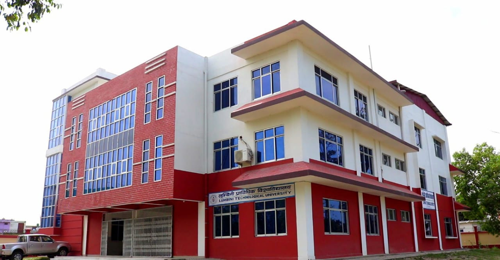

Lumbini Technological University was established on July 2, 2022 (Ashar 18, 2079 BS) by the Act of Province Legislature with the goal of advancing higher education in the field of information technology, engineering, agricultural and forestry, and tourism, among others, with a particular focus on the application and development of technology and innovation. Technology continues to play an increasingly significant role in shaping our world with traditional jobs being replaced by tech-oriented ones, which demands competent professionals. LTU's mission is to promote and offer comprehensive programs at undergraduate and graduate levels that produce graduates who have both disciplinary expertise and the ability to handle real-world problems by combining theoretical knowledge with practical application along with exposure visits to reputed technological institutions. LTU recognizes that academic programs are not the only way to foster a rich learning experience. To this end, it also places a strong emphasis on research and continuous education programs by supporting and encouraging students and faculty to engage in rigorous research activities, thus fostering a culture of innovation and creativity that benefits both students and faculty alike.